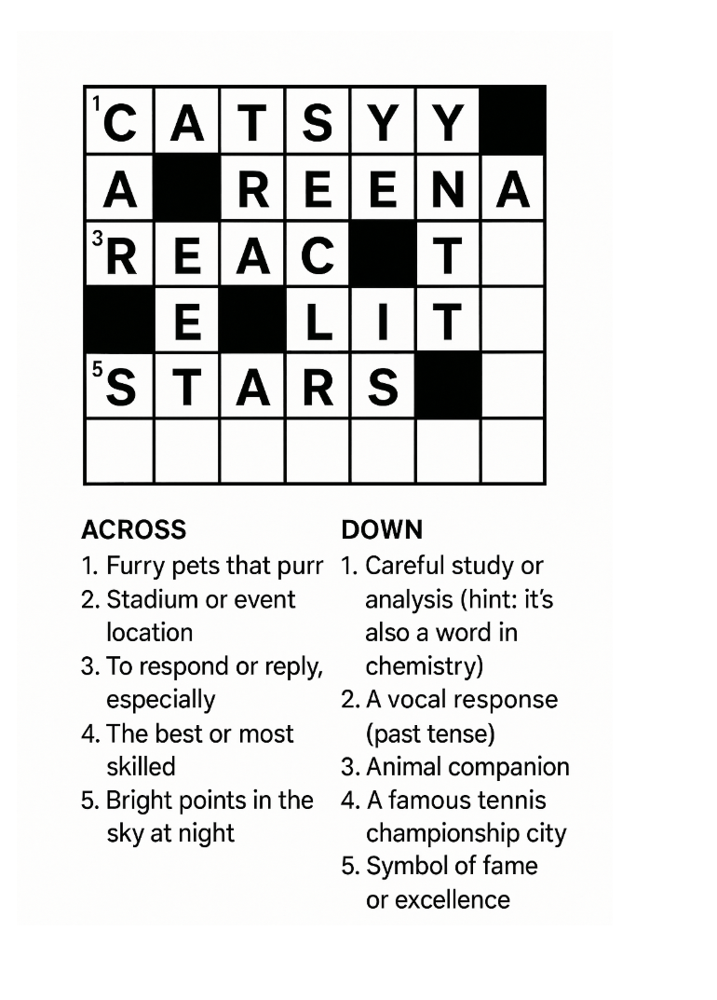
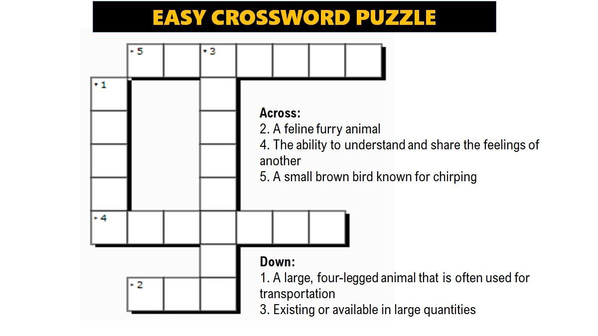
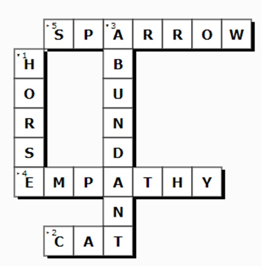
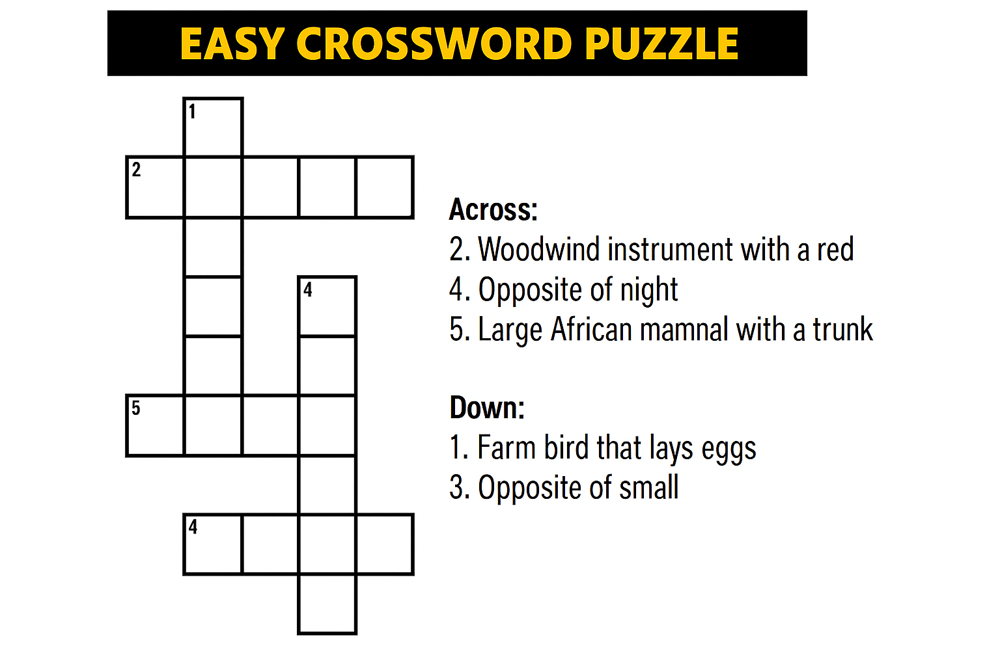
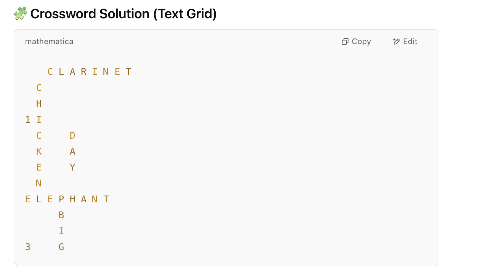
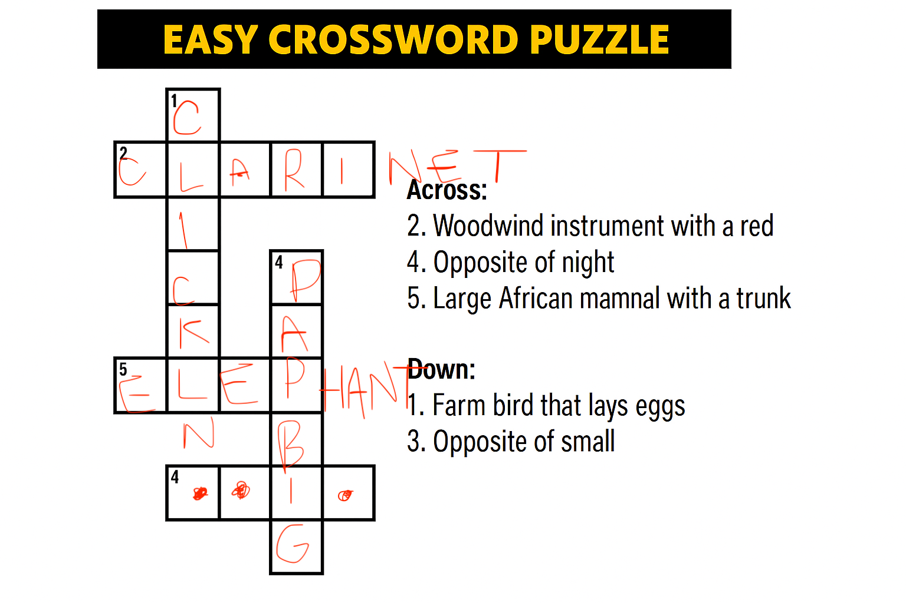

Last Time
Picking up from where we left off last time, I tried testing LLMs against how well they can fill out a cross word puzzle…and a faulty one at that…the idea was to first see how well an LLM can generate a crossword puzzle–given its renowned talent in mimicing and generating human-like speech, and then in separate chat logs/prompting a second model asking them to evaluate the puzzle itself (knowing that the “down” clues were not exactly accurately generated).
In sum, the LLM’s did ok in filling out the puzzle as much as they could given the constraints of the clues and actual solutions. Today, I thought I would extend the experiment to track their learning capacities and see how well they can generate more accurate puzzles over a number of trials. So, within the same, original chat log as the first experiment in which I asked to generate a cross word puzzle, I prompted ChatGPT to do so again and to refine its approach (by letting it know it made a mistake in the first):
Second time around, let’s produce another cross word puzzle:
I asked Chat to refine it’s approach with the following prompt:
“The cross word puzzle you produced above had issues with the”down” clues (they weren’t real words). Can you produce another similar cross word puzzle or fix the one above?”
ChatGPT:
You’re absolutely right — the Down clues and answers in the previous puzzle had inconsistencies (some weren’t valid words vertically). Thanks for catching that.
Here is a new and corrected 5x5 crossword puzzle — all Across and Down entries form valid words.
🧩 Crossword Grid (Empty with Numbers)
1 C A T S _
2 A _ _ _ _
3 R _ _ _ _
4 E _ _ _ _
5 S _ _ _ _✅ Filled Crossword Grid (Solution)
1 C A T S Y
2 A R E N A
3 R E A C T
4 E L I T E
5 S T A R SClues
ACROSS
- Furry pets that purr.
- Stadium or event location.
- To respond or reply, especially emotionally.
- The best or most skilled.
- Bright points in the sky at night.
DOWN
- Careful study or analysis (hint: it’s also a word in chemistry).
- A vocal response (past tense).
- Animal companion.
- A famous tennis championship city.
- Symbol of fame or excellence.
The accompanying image it produced:

- Unfortunately, while this was nice and all–even going as far as to produce an image of the crossword–this didn’t exactly accomplish what we wanted, which was a proper, consistent crossword puzzle.
Trying one more time, I’ll note the fact that it contains inconsistencies again and will ask it to produce another, hopefully more accurate puzzle
Third Time’s the Charm????
Absolutely — let’s fix that! Here’s a new, clean, and fully consistent 5x5 crossword puzzle with real English words in every Across and Down slot.
✅ Filled Crossword Grid (Solution)
1 P I A N O
2 A R E A S
3 R A I S E
4 I N C E N
5 S E N S E🧩 Crossword Grid (Empty for Solving)
1 _ _ _ _ _
2 _ _ _ _ _
3 _ _ _ _ _
4 _ _ _ _ _
5 _ _ _ _ _Clues
ACROSS
- A keyboard instrument.
- Regions or spaces.
- To lift up.
- __ burner (type of lab equipment).
- Smell, taste, or touch — one of five.
DOWN
- Opposite of push.
- Sun’s opposite in weather.
- Acknowledge with a nod, for example.
- Belonging to us.
- Detect or perceive.
Aaaand, it still failed…to refer back to some of our prompting strategies from a previous blog post, I tried refining my own approach by inputting an example and seeing how well it does with an already established crossword.
The example:
This one should be simple enough, let’s see how well Chat does in solving it completely and accurately.

The Answer:
Great! Let’s solve the crossword based on the clues and the layout from your image.
🧩 Clues and Solutions
ACROSS
- 2. A feline furry animal → CAT
- 4. The ability to understand and share the feelings of another → EMPATHY
- 5. A small brown bird known for chirping → SPARROW
DOWN
- 1. A large, four-legged animal that is often used for transportation → HORSE
- 3. Existing or available in large quantities → ABUNDANT
✅ Filled-in Crossword
Here’s how the crossword fills in (matching the image’s layout):
1 Down: H O R S E
2 Across: C A T
3 Down: A B U N D A N T
4 Across: E M P A T H Y
5 Across: S P A R R O W
Let me know if you’d like this filled-in version as an image!

Perfect!! It solves with style and grace…
I’ll now ask Chat to create a puzzle of a similar vein, and see how well it truly refines its approach. Hopefully by giving it a reference point, it learns more quickly the kind of output I desire in this case…
Fourth Time: The Generated Image is as follows:

OK! Good start! It actually generated a more neat version of a cross word puzzle, let’s see what the answers are!

So, it failed to give a precise answer, unfortunately. According to the clues and answers it gave, the following cross word would be filled out as such:

It’s interesting to see how poorly LLMs can execute generating cross words correctly. While they excel at pattern matching and semantic relationships, the visual component makes it harder for them to identify various types of word play in these cases. Further…: while they can get away with generating sometimes plausible answers, they maintain limitations in their understanding of length constraints, and more niche forms of knowledge required to understand certain clues embedded in colloquial or culturally significant words. In other words, the visually complicated element coupled with the difficulting in extracting definitions makes it hard for LLMs to compete in this realm.
In sum, stick to solving your cross word puzzles on your own! Trust yourself and the answers you come up with, because in the majority of instances, LLMs will do a much poorer job than you!